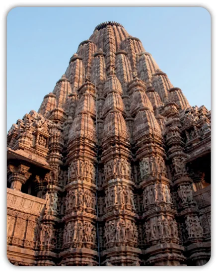
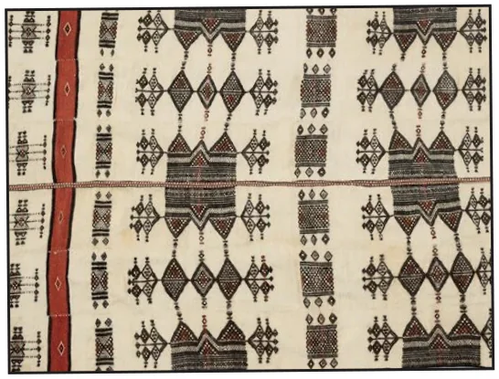
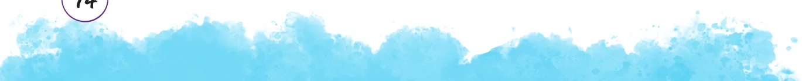
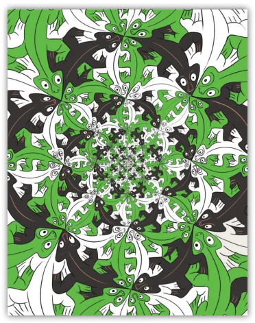

Fractals have also long been used in human-made art! Perhaps the oldest such fractals appear in the temples of India. An example occurs in the Kandariya Mahadev Temple in Khajuraho, Madhya Pradesh which was completed in around 1025 C.E.; there one sees a tall temple structure, which is made up of smaller copies of the full structure, on which there are even smaller copies of the same structure, and so on. Fractal-like patterns also occur in temples in Madurai, Hampi, Rameswaram, Varanasi, among many others.

Kandariya Mahadev Temple
Fractals are also common in traditional African cultures. For example, patterns on Nigerian Fulani wedding blankets often exhibit fractal structures.

Nigerian Fulani Wedding Blanket


In the blanket shown in the figure, there are diamond shaped patterns, inside of which there are smaller diamond shaped patterns, and so on. The modern maestro of fractal art is undoubtedly the Dutch artist M.C. Escher. We have already seen that some of his prints explore the mathematical theme of tiling. One famous example involving fractals is his work ‘Smaller and Smaller’, which exhibits the identical pattern of lizards but at smaller and smaller scales. Here is a print inspired by Escher’s ‘Smaller and Smaller’.
